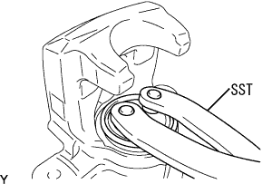
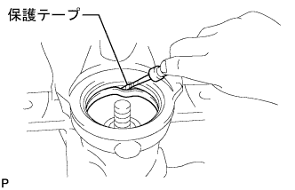

Rear Brake Disassembly |
| 1. Remove Rear Disc Brake Piston |
 |
Using SST, turn the piston counterclockwise to remove it.
| 2. Remove Cylinder Boot |
Remove the cylinder boot from the piston.
| 3. Remove Piston Seal |
 |
Using a flat-head screwdriver with its tip wrapped with protective tape, remove the piston seal.
| 4. Remove Rear Disc Brake Bleeder Plug Cap |
| 5. Remove Rear Disc Brake Bleeder Plug |